Java Basics & Platform
Introduction
Agenda
- Understand the activity of programming
- Learn about the architectures of computers
- Learn about abstractions of programming languages
- Become familiar with meaning of Java
- Understand differences between Java compilation and interpretation
- The "Hello World" example in Java
- How Will Java Change My Life?
Prerequisites
- Computer savvy (file management, text editing)
- Problem solving skills
- Time management
- High school math (algebra, trigonometry)
- No prior programming background required
What is a computer?
- Conventionally:
- Central processing unit
- Memory
- Peripherals
- Executes very simple instructions
- Executes instructions very rapidly
- General purpose device
- Programs describe specific actions
Schematic Diagram of a Computer
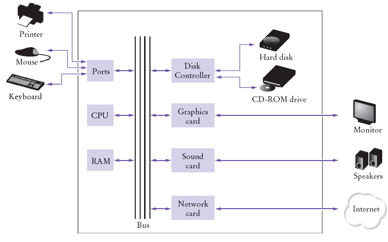
What is a computer?
The computer is the network
(8 Fallacies of Distributed Computing)
- The network is reliable
- Latency is zero
- Bandwidth is infinite
- The network is secure
- Topology doesn't change
- There is one administrator
- Transport cost is zero
- The network is homogeneous
What Is Programming?
- Computers are programmed to perform tasks
- Different tasks = different programs
- Program
- Sequence of basic operations executed in succession
- Contains instruction sequences for all tasks it can execute
- Sophisticated programs require teams of highly skilled
programmers and other professionals
- Machine/Virtual Machine
21 40 16 100 163 240
- Assembler
iload intRate
bipush 100
if_icmpgt intError
- High-level language
if (intRate > 100) . . .
Computers are mind magnification tools
- The tools are beginning to look less like machines and more like part of our minds
- Like other forms of expression such as writing, painting, sculpture, animation, and filmmaking
- OOP is part of this movement toward using computers as an expressive medium
The Progress of Abstraction
All programming languages provide abstractions.
- Assembly language is a small abstraction of the underlying machine.
- "Imperative" languages are abstractions of assembly languages.
- Problem solving: mapping from "problem space" to "solution space"
- A solution space is a machine - it is very constrained
- programs are difficult to write
- programs are expensive to maintain
- Alternative to modeling the machine is to model the problem you are trying to solve.
- C, PASCAL - all problems are procedures
- LISP - all problems are ultimately lists
- PROLOG - all problems are logical decisions (formulas)
- Smalltalk - represent solution elements in your problem as experts -
social metaphor
- The elements in the problem space and their
representations in the solution space are objects.
- SORCER:
represent solution elements as distributed services (service providers) as
network objects
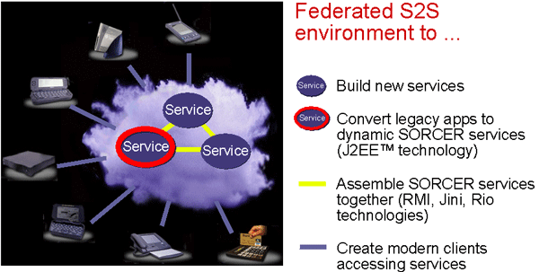
Object Abstraction
- OOP: a higher level of abstraction
- Bjarne Stroustrup: Higher level of abstraction allows details to be
hidden, which allows code to be shorter. The more details, the more mistakes.
Plus, the more code you have, the harder it is to maintain. And, code at
higher levels of abstraction is amenable to tools that analyze and optimize.
- Can think in terms of problem, not solution
- Vocabulary facilitates communication: A bank has
Accounts,
Customers, Balances, etc...
What is Java?
-
- Island of Indonesia
- Object-Oriented Philosophy
- Programming language
- API
- Platform
- Freedom
- Security
- Internet networking
Object-Oriented Philosophy
- Everything is object (active data in your problem space)
- A program is a bunch of objects telling each other what to do by sending messages
- Each object has its own memory made up of other objects
- Every object has
a type (has its origin - class)
- All objects of a particular type can receive
the same messages
- What Is an Object?
An object is a software bundle of variables and related methods.
Software objects are often used to model real-world objects you find in everyday
life.
- What Are Messages?
Software objects interact and communicate with each other using
messages.
- What Are Classes?
A class is a blueprint or prototype that defines the variables and
the methods common to all objects of a certain kind.
Java Programming Language
- Is very object-oriented
- Enforces type safety at run-time (safe)
- Platform-independent (highly portable - "write once, run anywhere")
- Designed for the Internet
- Supports exceptions
- Supports multi-threading
- Rich library (API)
- Uses garbage collection
- Is dynamically linked
- Is dynamically extensible
- 5 data types (primitives, array, class, interface, null)
- Includes eight primitive types
- Low-coupling; high-cohesion APIs
Exceptions
- Error handling that's "structured"
- Like a "goto" from error to handler
- Built into the Java language
- Java compiler forces client programmers to deal with potential errors
Multi-threading
- Multi-threading built into Java
- Like multiple processes in same address space
- Synchronization built into Java
- Helps you do several things at once:
responsive UIs, animations, server apps, ...
- Designed to work cross-platform
Java APIs
- Sun's goal: abstract OS interface
- I/O: datat to/from files, strings, sockets, ...
- GUI: AWT, 1.1 event model, Swing
- Software Components: JavaBeans
- Net programming: Applets,
java.net, RMI
- Accessing SQL databases: JDBC
Compiling and Running
Compiler machine dependent environment
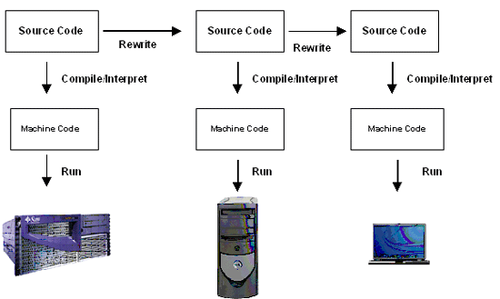
The JVM model
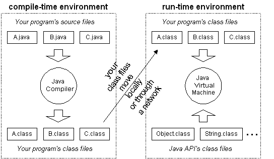
Java is also unusual in that each Java program is both compiled and interpreted.
With a compiler, you translate a Java program into an intermediate language
called Java bytecodes--the platform-independent codes interpreted by
the Java interpreter. With an interpreter, each Java bytecode instruction is
parsed and run on the computer. Compilation happens just once; interpretation
occurs each time the program is executed.
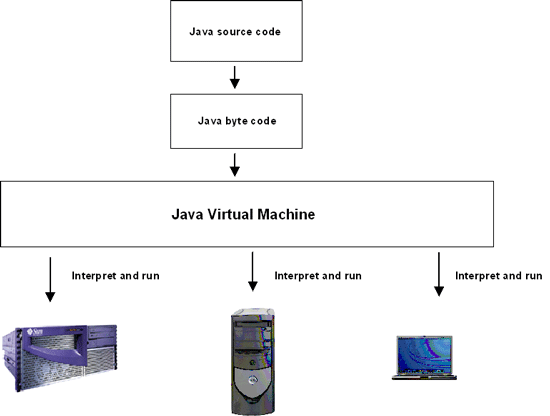
Linking, Optimization, and Execution
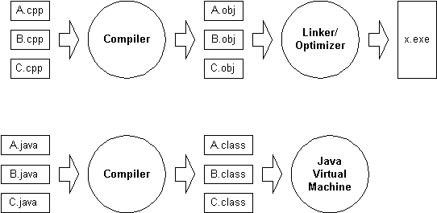
Java Virtual Machines
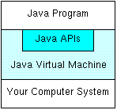
You can think of Java bytecodes as the machine code instructions for the
Java Virtual Machine (Java VM). Every Java interpreter, whether it's a
Java development tool or a Web browser that can run Java applets, is an
implementation of the Java VM. The Java VM can also be implemented in hardware.
Java bytecodes help make "write once, run anywhere" possible. You can compile
your Java program into bytecodes on any platform that has a Java compiler. The
bytecodes can then be run on any implementation of the Java VM. For example, the
same Java program can run on Windows NT, Solaris, and Macintosh.
Java virtual machines (JVMs), Java development kits (JDKs), Java runtime
environments (JREs)
Just-in-time (JIT) compilers
Just-in-time (JIT) compilers are essentially fast traditional compilers
that translate the Java technology bytecodes into native machine code on the fly.
A JIT running on the end user's machine actually executes the bytecodes
and compiles each method the first time it is executed.
The Java HotSpot VM Architecture
Rather than compiling method by method, just in time,
the Java HotSpot VM immediately runs the program using an interpreter,
and analyzes the code as it runs to detect the critical hot spots in the program.
Then it focuses the attention of a global native-code optimizer on the hot spots.
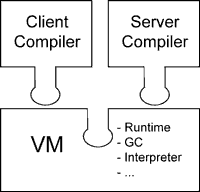
The Java HotSpot Client VM, on the left, and the Java HotSpot Server VM,
on the right, use a different compiler but otherwise interface to the same virtual machine,
using the same garbage collection (GC) routine, interpreter,
thread and lock subsystems, and so on.
The J2SE SDK contains both of the these systems in the distribution,
so developers can choose which system they want by specifying -client or -server
Java Related Compilation Summary
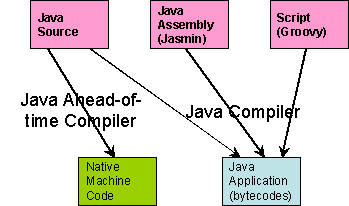
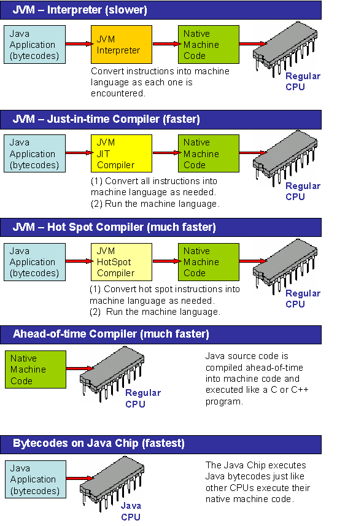
Benchmarking programming languages?
"There are lies, damn lies and Benchmarks".
How can we benchmark a programming language?
We can't - we benchmark programming language implementations.
How can we benchmark language implementations?
We can't - we measure particular programs.
The Computer Language Shootout
Benchmarks
The Java is Faster than C++ and C++ Sucks Unbiased Benchmark
Performance
Comparison of Java/.NET Runtimes
Linpack Benchmark FAQ
Self Check
- Does a person who uses a computer for office work ever run a
compiler?
- Where is a program stored when it is not currently
running?
Answers
- No–a compiler is intended for programmers, to translate
high-level programming
instructions into VM (byte) code.
Yes–a JVM compiler can compile opcodes into a physical machine code.
- In secondary storage, typically a hard disk on a local host or a remote
host . Class loaders are used when a program is located on of remote hosts.
The Java Platform
A platform is the hardware or software environment in which a program runs. The
Java platform differs from most other platforms in that it's a software-only
platform that runs on top of other, hardware-based platforms. Most other
platforms are described as a combination of hardware and operating system.
The Java platform has two components:
- The Java Application Programming Interface (Java API)
- The Java OS (implemented by JVM)
- The Java Runtime Environment (implements Java VM)
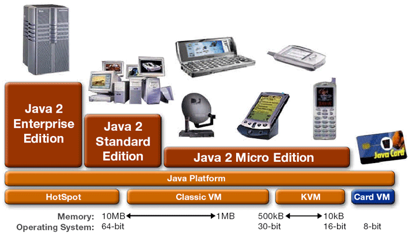
- "Write Once, Run Anywhere" -> Java Platform
- All kinds of systems can talk to each other -- from smart cards to
supercomputers -- regardless of the underlying hardware or system software.
- When software written in the Java programming language is compiled with
Java technology, byte code results. The Java virtual machine, can explain
(interpret) that byte code to any platform on which the Java virtual machine is
installed. This means no more porting of programs to platforms.
Java Card Technology
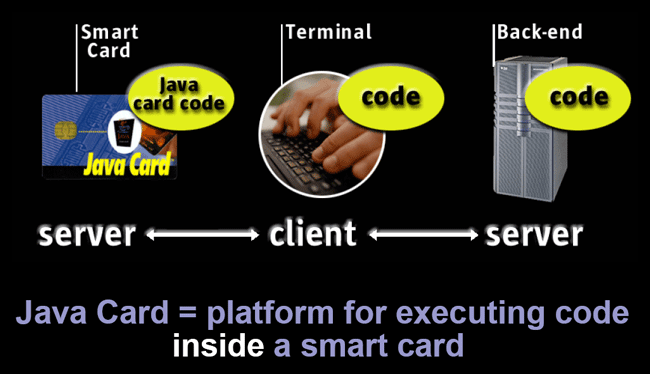
End-to-End Computing
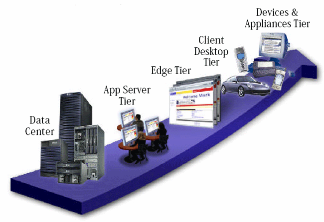
Java™ Technology Leads the Way…
New application development by language ( Soundview TG, 2001)
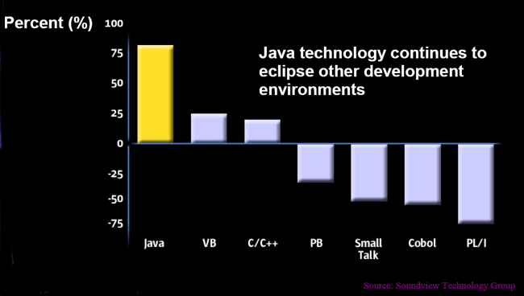
Freedom
- Hardware (CPU)
- Operating system
- Object mobility
- Network protocols
- Internationalization
Security
- Two Levels of Security
- Low-level intrinsic security
- Resource level security
- Sandbox Security Model
- Class loaders
- Verification
- Security Manager
- Language (including, type safety)
- Beyond the Sandbox - protection domains
- JAAS, JSSE, GSS, JCE, JCA, JERI, Jini Security
Internet Networking
- URLs, TCP, UDP, multicast networking
- Applets/Plug-ins/Servlets/JSP/JSF
- RMI, JERI, RMI Activation
- EJBs
- Java IDL, RMI/IIOP
- Jini
Network Technology
- JXTA P2P Computing
- Web Services (JAX...)
- Java Database Connectivity (JDBC)
Three Laws of Computing
- Moore's Law
- Computing power doubles every 18 months
- Gilder's Law
- Network bandwidth capacity doubles every 12 months
- Metcalfe's Law (Net Effect)
- Value of network increases exponentially as number of participants
increases
Waves of Computing
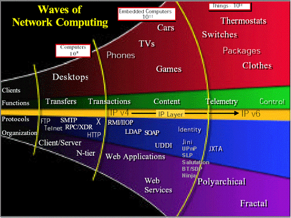
Many Kinds of Networks and Technologies
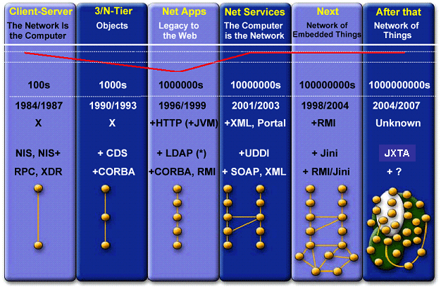
Applets on a Web Page
Jmol is a free, open source molecule viewer written in Java. It is a
collaboratively developed visualization and measurement tool for chemical
scientists.
Features
- Available as both a Java application and as a web browser applet
- Reads many types of files:
ABINIT,
ACES II,
ADF (Amsterdam Density
Functional), CML
(Chemical Markup Language),
Dalton,
GAMESS,
Gaussian 90/92/94/96/98,
Ghemical,
Jaguar,
MDL molfiles, MOPAC 7/97/2002,
PDB, XYZ (XMol).
- Animates the results of simulations.
- Displays measurements inter-atomic distances, bond angles, and dihedral
angles from atomic coordinates as a simulation progresses.
- Animates the computed vibrational modes from any of the quantum
chemistry packages mentioned above.
- Supports RasMol/Chime scripting
- Displays vectors (velocity, dipole, etc.), charges, atomic symbols, or
atomic indexes during animation.
- Prints or exports images in these formats: GIF, JPG, PPM, BMP, PNG, PDF,
PostScript, and PovRay (including animations).
- Can display unit cell boxes, and energy bands.
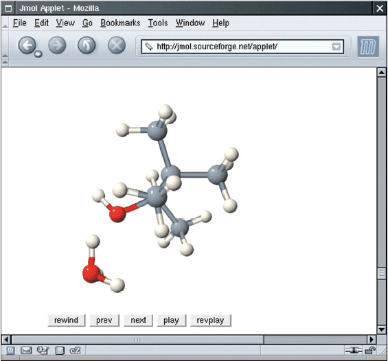
File Hello.java
| 1 |
public class Hello |
| 2 |
{ |
| 3 |
public static void main(String[] args) |
| 4 |
{ |
| 5 |
// display a greeting in the console
window |
| 6 |
System.out.println("Hello, World!"); |
| 7 |
} |
| 8 |
} |
A simple program
- public class ClassName
- public static void main(String[] args)
- // comment
- Method call
object.methodName(parameters)
- System class
- System.out object
- println method
Syntax: Method Call
| |
object.methodName(parameters)
|
Example:
| |
System.out.println("Hello, Dave!");
|
Purpose:
To invoke a method of an object and supply any additional parameters
|
Compiling and Running
- Type program into text editor
- Save
- Open command shell
- Compile into byte codes
javac Hello.java
- Execute byte codes
java Hello
From Source Code to Running Program
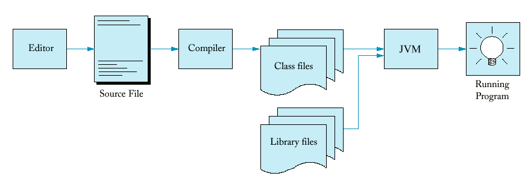
Errors
- Syntax errors
System.ouch.print("...");
System.out.print("Hello);
- Detected by the compiler
- Logic errors
System.out.print("Hell");
- Detected (hopefully) through testing
The Edit-Compile-Test Loop

I can't promise you fame, fortune, or even a job if you learn Java.
Still, Java is likely to make your programs better and requires less effort than
other languages. I believe that Java will help you do the following:
- Get started quickly: Although Java is a powerful
object-oriented language, it's easy to learn, especially for programmers already
familiar with C or C++.
- Write less code: Comparisons of program metrics (class
counts, method counts, and so on) suggest that a program written in Java can be
four times smaller than the same program in C++.
- Write better code: The Java language encourages good coding
practices, and its garbage collection helps you avoid memory leaks. Java's
object orientation, its JavaBeans component architecture, and its wide-ranging,
easily extendible API let you reuse other people's tested code and introduce
fewer bugs.
- Develop programs faster: Your development time may be as
much as twice as fast versus writing the same program in C++. Why? You write
fewer lines of code with Java and Java is a simpler programming language than
C++.
- Avoid platform dependencies with 100% Pure Java: You can
keep your program portable by avoiding the use of libraries written in other languages.
- Write once, run anywhere: Because 100% Pure Java programs
are compiled into machine-independent bytecodes, they run consistently on any
Java platform.
- Distribute software more easily: You can upgrade applets
easily from a central server. Applets take advantage of the Java feature of
allowing new classes to be loaded "on the fly," without recompiling the entire
program.
- Learn selectively APIs: Focus on learning those parts of the library
that you need for your programming projects.